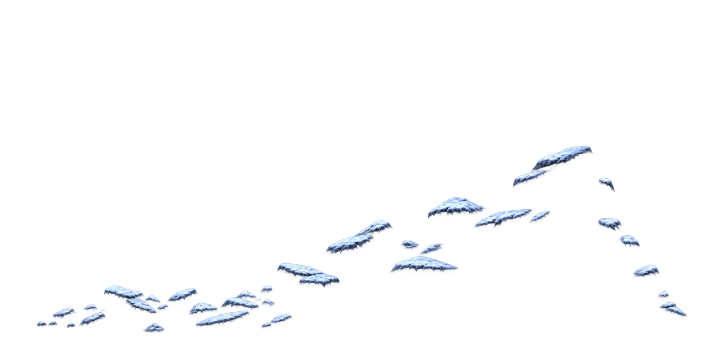
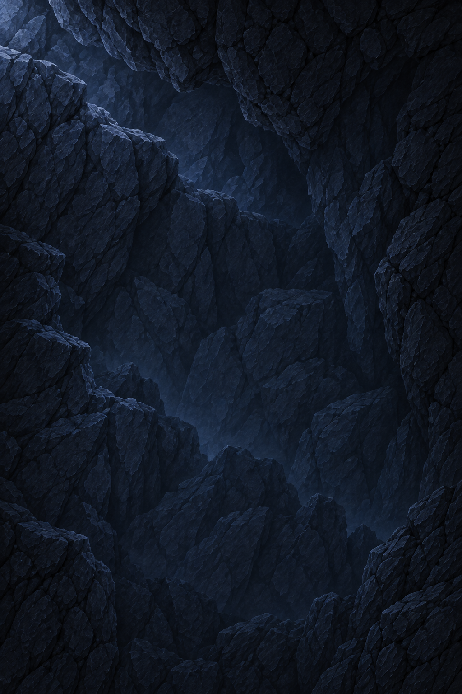

시작맵 · 입구 기준





기존 카메라폭80% · 캐릭터 약9%. 시작맵 1차 합성과 톤 비교.
등반 하단 · 16:9 부분 보기

암벽 예정 영역
암벽 예정 영역
후면 배경 PNG의 Y62.5~100% 표시 · 캐릭터 약9% 크기 참고
승인한 경로: 동굴 입구 → 짧은 전이 통로 → 하늘이 보이지 않는 동굴 내부 등반. 이번 제작은 실내 후면 한 장입니다. 이전 설산 후보는 내부 배경에서 제외했습니다.

기존 카메라폭80% · 캐릭터 약9%. 시작맵 1차 합성과 톤 비교.

후면 배경 PNG의 Y62.5~100% 표시 · 캐릭터 약9% 크기 참고
| 레이어 | 역할 / 상태 |
|---|---|
| 먼 배경 | 하늘·설산 없는 동굴 후면 암벽. 옅은 내부 안개 포함. 이번 후보 제작. |
| 중경 암벽 | 실내 등반 공간을 감싸는 벽과 천장을 별도 제작 예정. |
| 진입 지면·발판 | 왼쪽 통로에서 같은 높이로 진입, 이후 위로 진행. 점프 검증 후 간격 확정. |
| 눈·고드름 | 실내는 눈을 기본 추가하지 않음. 필요한 고드름은 별도 소재로 검토. |
외부에서 내부로 넘어가는 경계는 전이 통로·천장·암벽으로 가릴 예정입니다. 실제 전환과 접합은 아직 검증하지 않았습니다. 현재 비교는 색감·원근·부분 카메라 가독성 확인입니다.